Condado
“Um anel para todos governar, Um anel para encontrá-los,
Um anel que a todos traz para na escuridão atá-los.”
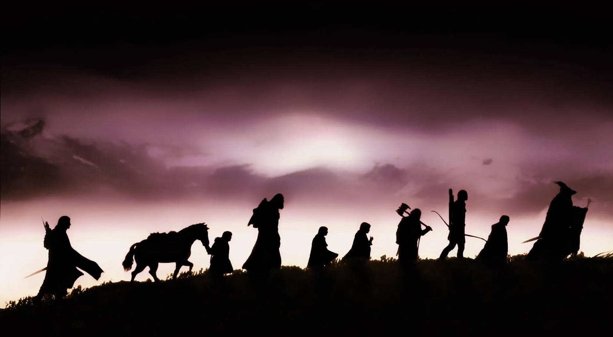
O Senhor dos Anéis (The Lord of the Rings, no original) é um livro de alta fantasia, escrito pelo escritor britânico J. R. R. Tolkien. Escrita entre 1937 e 1949, com muitas partes criadas durante a Segunda Guerra Mundial, a saga é uma continuação de O Hobbit (1937).
Embora Tolkien tenha planejado realizá-la em volume único, a obra foi originalmente publicada em três volumes (The Fellowship of the Ring, The Two Towers e The Return of the King) entre 1954 e 1955, com cada volume contendo dois livros cada, e foi assim, em três volumes, que se tornou popular.
Desde então, a obra foi reimpressa várias vezes e traduzida para mais de 40 línguas, vendendo mais de 160 milhões de cópias, tornando-se um dos trabalhos mais populares da literatura do século XX.
"Tudo o que temos de decidir é o que fazer com o tempo que nos é dado."

Personagens
Frodo Bolseiro
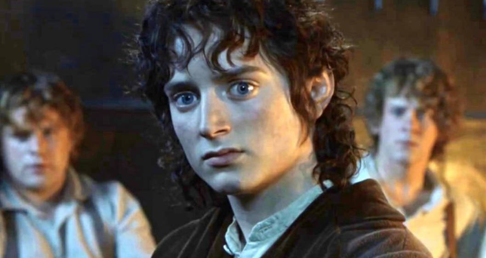
Gandalf
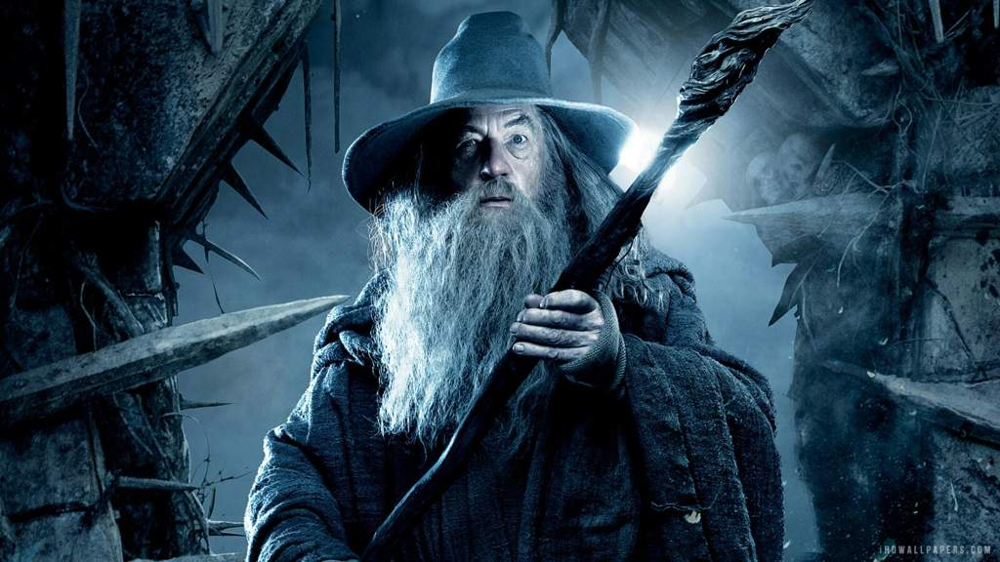
Légolas
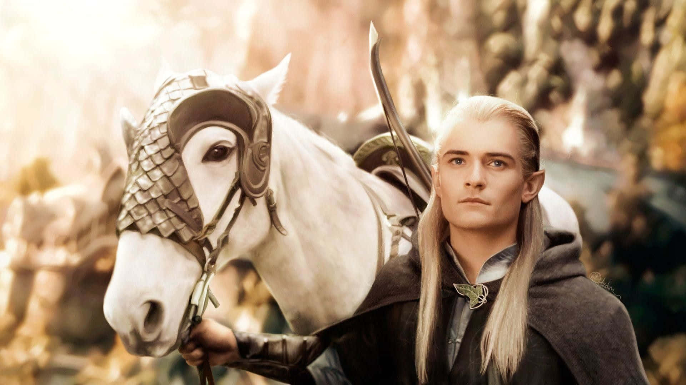
Aragorn
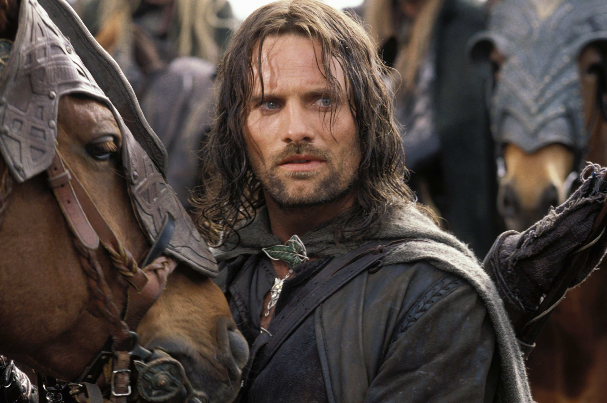
Gimli
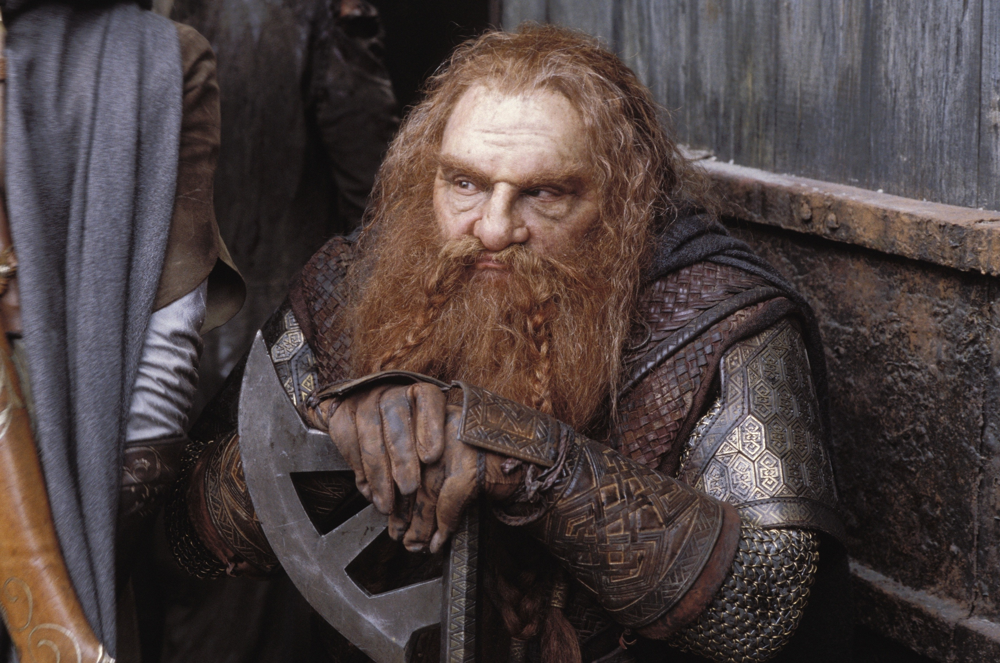
Sam
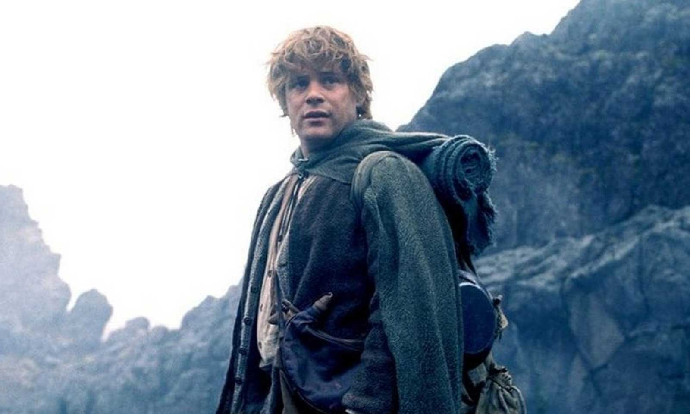
Pippin
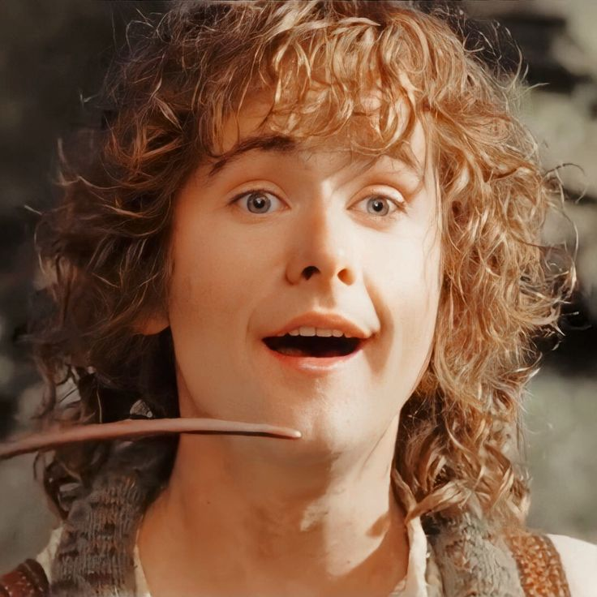
Merry
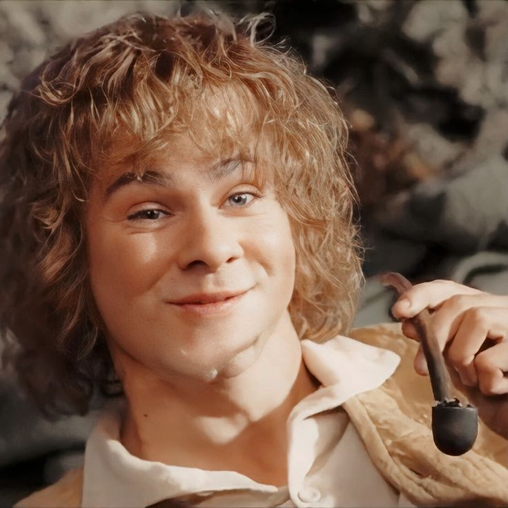
Sauron
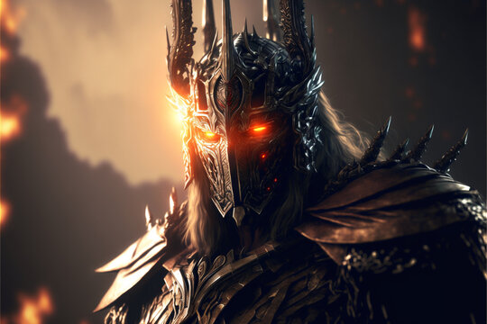
Livros da saga O Senhor dos Anéis
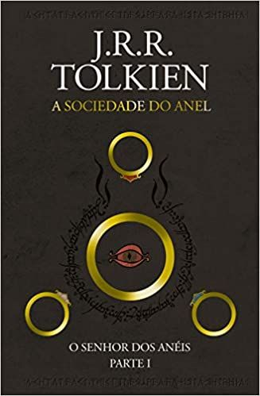
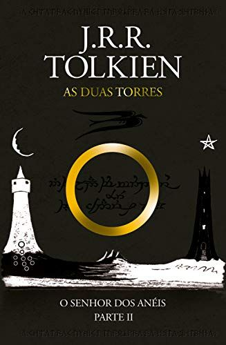
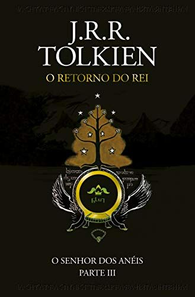